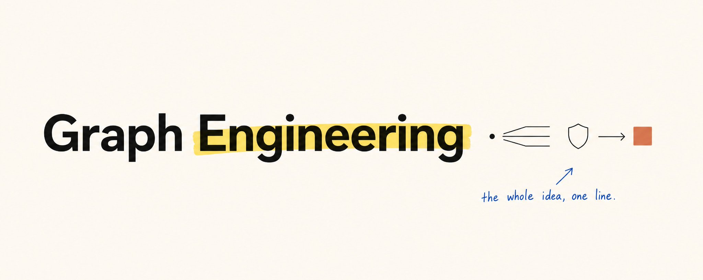
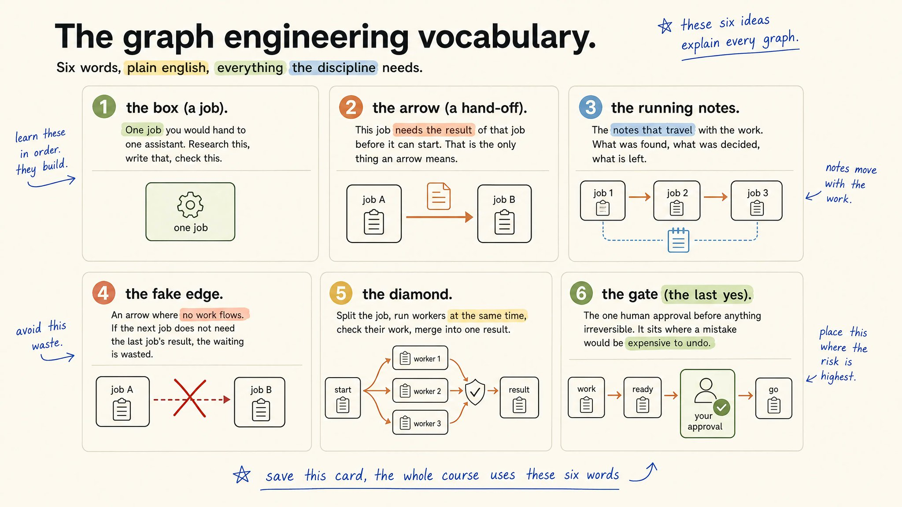
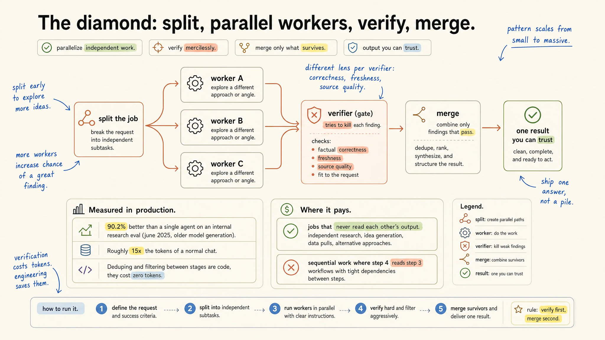
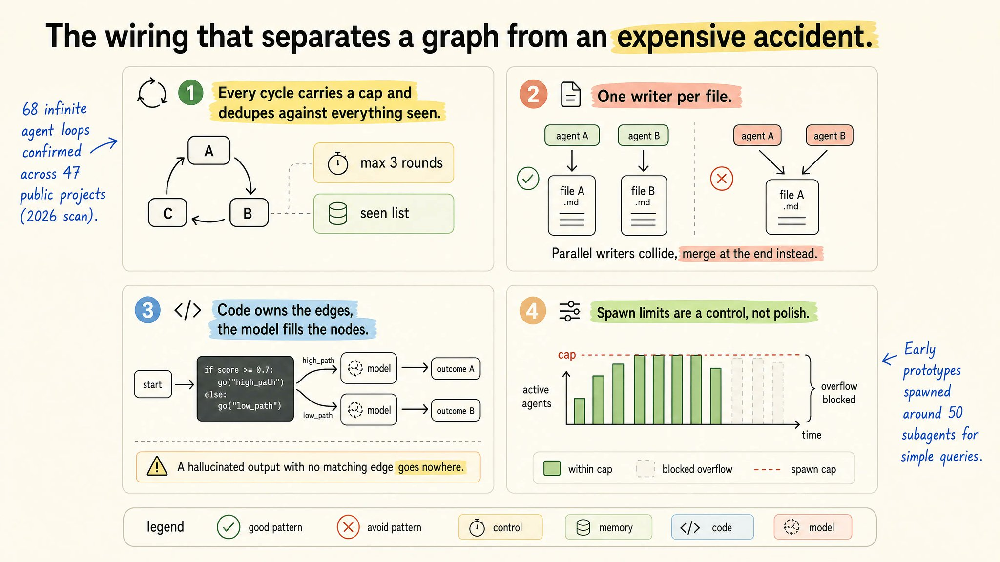
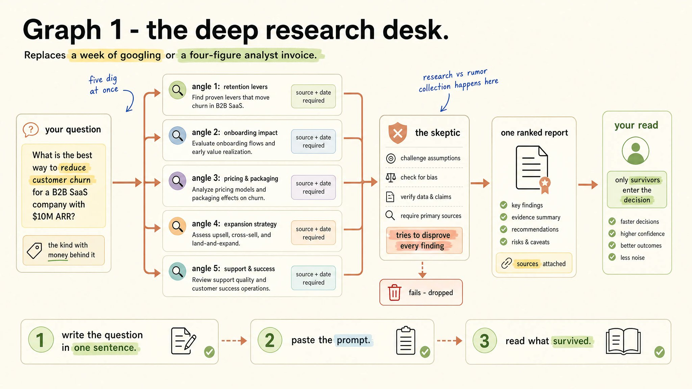
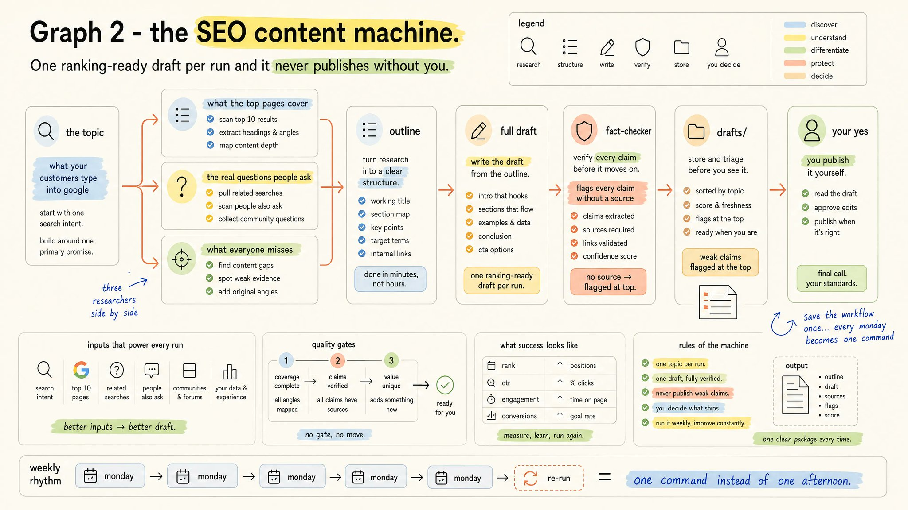
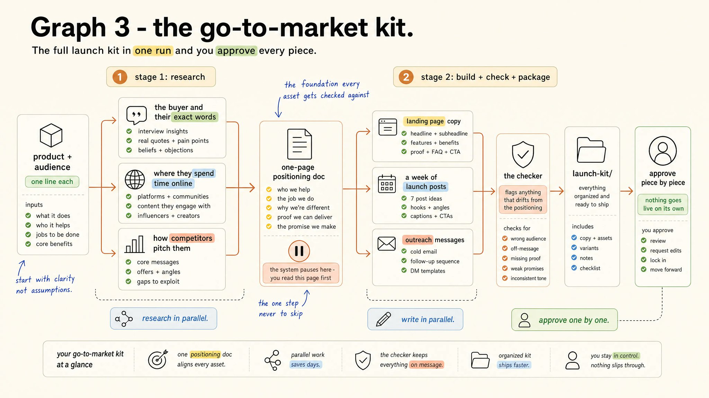

如何掌握 Graph Engineering
Machina 完整课程中文解读
一门关于「怎么搭 agent 图」的完整课。原文 4 节课讲原理、3 个图谱讲实战、1 张 Playbook 收尾。本文按原文顺序逐节完整翻译,每节顶部放一句话原则提炼(金句框),不加解读、不补例子。原文所有 6 张配图完整保留。

原文封面 · How to master graph engineering (Full Course) · Machina (@EXM7777) · 2026/07/22
我今天要教你搭你的第一张 agent 图,并把它真正用在你的业务里。
这是一支 AI agent 团队:并行去研究,互相拆对方的台子,最后把多份材料合成一份交到你手里。你的「同意」,是这条流水线通向世界之前的最后一道 yes。
这门课会讲透整条方法:什么是 graph、唯一值得用的那个模式、决定要不要上 graph 的止损线,以及三套完整搭建——一套深度调研台、一台 SEO 内容机、一套上市工具包。
先补一段背景,因为这个潮流有一段故事。
写 Claude Code 的那位工程师说他已经不再手动写 prompt,他在写让 AI 自动 prompt 的循环。几周后,同一个圈子里的人又宣布循环已经过时,全都跑去搞 graph。
在喧闹的背后,是一门真正的工艺。它比那些帖子讲的要简单,你也不需要是工程师才能上手任何一步。
Course Map
课程地图:
- 第 1 课:一张图到底是什么
- 第 2 课:钻石模式
- 第 3 课:止损线
- 第 4 课:人这道闸
- 图谱 1 — 深度调研台(搭建 + prompt)
- 图谱 2 — SEO 内容机(搭建 + prompt)
- 图谱 3 — 上市工具包(搭建 + prompt)
- 实战手册
如果你想在这篇文章之外再深入一层,把这一类系统变成钱,那正是我做 Real-Time AI Ops 社群的目的: weeklyaiops.com。
What a Graph Actually Is
一张图,就是把你 AI 的工作画出来、让你能看见。
它回答两个问题:哪些工作要做,哪些工作必须等另一个先做完。
每个工作都相当于交给一个助理的活——比如调研一个竞品、写一封邮件、把数据跑成图表。
当一个工作需要另一个的结果才能开始,你就用一条线把两个节点连起来。
一份小而清晰的运行笔记会跟着工作一起流动,把已经发现的东西、写过的内容、跳过的事情都装在里面。
我把这一整套术语压成下面这张卡片,存一次,你会一直用它。

原文配图 · 第 1 课词汇卡片 · Machina (@EXM7777) · 2026/07/22
动手用任何新工具之前,今晚我建议你先做一件事。
看看你现在跑着的 AI 系统,对里面每一条「然后」问一句:这一步到底要不要等上一步的结果?
一条箭头是不是真的存在,要看工作有没有真正流过它。
「把这份文件总结一下,然后看一眼我的日历」听起来是个序列,但「看日历」这一步根本不需要总结。这两件事原本不需要互相等。
当答案是「不需要」的时候,那条边就是假的,等就是白等。你在任何画过的图里,都能找到两三条这种假边。
现在你的系统跑成一条直线,每个任务都等前一个做完。能跑,但这是最慢的跑法——任何一个任务卡住,后面所有都跟着卡。
动手搭之前,还有一件事。
工程师们几个小时之内就开始顶这条潮流,说这是几十年前的模式穿了一件新名字。我把这看成好消息。因为一个已经在关键系统里跑了数十年的模式,恰恰是你愿意拿来托付业务的那种。
The Diamond Pattern
你去看任何一个严肃的 agent 系统,里面反复出现的,是同一张图。
工作先拆开,几个 worker 并行往里挖,然后有一个东西去检查他们找到的东西,最后所有结果合回到一个答案里。
这个图就叫「钻石」,我很有把握地跟你讲:这是你今年唯一需要记住的模式。
Claude 内部的 research 功能,就是把这一套跑在生产里——一个 lead 做规划,几个 worker 并行收集,结论被检查之后才送到你手上。
所有人都跳过的那一步,是「检查」这一步。你要把它当成不可省的。
每一次严肃的 AI 自我检查实验,都得出同一个结论:模型漏掉自己绝大多数的错误。
所以永远不要让同一个 agent 改自己的作业。
把检查交给一个独立的工作,它的唯一任务就是在结果到达你之前把站不住脚的发现挑出来;再给每个 checker 一个不同的问题——一个问「对不对」、一个问「是不是最新的」、一个问「来源是不是真的」。

原文配图 · 第 2 课 Diamond 模式 · Machina (@EXM7777) · 2026/07/22
The Stop Rule
agent 多未必就好——这节课是真正帮你省钱的。
研究者给一组 agent 团队和一个单 agent 同样的预算,工作能拆成独立小块的,团队明显赢;每一步都要看上一步的,单 agent 也明显赢。
这是止损线。
graph 买的是宽度,不是更好的判断。
我的建议很简单:当每一步都需要全局上下文,你只用一个 agent;当工作能拆成互相不看对方结果的若干份时,graph 才开始划算。
所以在你动手加第一个 agent 之前,先问唯一那个决定账单的题——你的工作在哪里能拆开。
The Human Gate
你是你自己图里最重要的节点。这一课讲你应该站在哪里。
任何一套严肃的系统,都会在不可逆的那一步之前先走一遍人。发送、发布、退款、开票——这些箭头,最后都应该指回到你。你的那一次同意,是草稿流水线通向世界之间的最后一个 yes。
连 Klarna 也是公开吃了一次这个亏:all-in AI 客服,把成本砍得太狠,最后把人服务作为付费层重新补了回来。
设计原则一句话就能讲完。
把审批放在「弄错代价很大」的那一步,而不是每一步。
每一步都设,你就是瓶颈。哪一步都不设,那就等于没人看着。
我还建议你拿「不会跟你吵架的数字」评估整套系统:到账的钱、留下的客户、跑过的测试。一个只给自己报告打分的系统,是会自信地错的。
四条小规则守住一切不变成昂贵的意外,下面这张卡就是你该存的版本:每个 loop 设最大轮数;任何一份文件只允许一个 job 去写;路由逻辑由写好的步骤来跑,AI 只负责填里面的工作;对「同时能 fork 多少个 agent」永远设一个上限。

原文配图 · 第 4 课 人这道闸 · Machina (@EXM7777) · 2026/07/22
Three Graphs That Pay for Themselves
下面这三个图谱都跑在 Claude Code 里,每个 prompt 都以你直接能粘贴的形态结尾,并且以你为最后一道闸。
每个 prompt 里都有一个词在做重活——「workflow」。它告诉 Claude 去搭一支协调的小团队,而不是按一条直线把事情做完。
The Deep Research Desk
想一想你最近一次做的、背后真有真金白银的决定——一次调价、一个新 offer、一个你差点就进的市场。
你大概花了一周时间到处搜,或者花了分析师一张昂贵账单,才做出那个决定。
你那个问题天然能拆成五个角度,五个研究员同时挖,一个怀疑者攻击所有找到的东西,最后一份报告送到你手上,只有经得起你阅读的那部分进入决策。

原文配图 · 图谱 1 深度调研台 · Machina (@EXM7777) · 2026/07/22
怎么跑:
- 在一个空文件夹里打开 Claude Code
- 用一句话写下你真正的问题,那种背后有钱的问题——比如「我该不该进入 X 市场」
- 把下面的 prompt 贴进去,把问题换成你自己的
- 看它展开——五个研究员并行,然后是怀疑者那一步,最后是合并后的报告
- 读报告,只有经得起你阅读的那部分,才进入决策
prompt:
你第一次跑就是几分钟而不是几天。我最看重的就是那一步怀疑者——绝大多数研究里,这一步根本不存在。
The SEO Content Machine
诚实说一句你的发文节奏,因为很多做业务的人真正想要的就是一周稳定出一篇能排名的稿,但一直做不到。
这个搭建每次跑产出一篇可以排名的草稿,并且永远不会在你没点头的情况下自己发出去。
三个研究员并排干活:一个盯当前排名靠前的页面在覆盖什么,一个盯用户真正在问的真问题,一个盯所有人都漏掉的角落。然后他们的工作合成一份大纲,一篇稿子被写出来、被事实核查,最后等在你文件夹里等你的 yes。

原文配图 · 图谱 2 SEO 内容机 · Machina (@EXM7777) · 2026/07/22
怎么跑:
- 挑一个你的客户会搜的具体话题
- 把下面的 prompt 贴进去
- 三个研究工作同时跑——排名靠前的页面、真问题、被忽略的角度
- 草稿落在你的 drafts 文件夹,每一条断言都被核查,弱的那几条被标在文首
- 你读一遍,补上只有你知道的细节,自己发出去
- 让 Claude 把这个 workflow 保存下来,以后每周一它就成了一条命令,整个周一就靠它产出
prompt:
The Go-to-Market Kit
你在做一个新发布——一个产品、一个 offer、一项服务——诚实的选项永远是:要么花几周准备,要么闭着眼上。
这个搭建一次性产出完整工具包,每一条都由你点头。
三个研究员并行画像买家、画像渠道、画像竞品,他们工作合到一份一页的定位文档。系统就在这里停一下,等你读完它——因为这一页,是后面每一条素材都要被拿来对照的基准。
然后三个写手并排起草:着陆页文案、上线帖、外联消息。一个 checker 标出任何偏离那份定位的内容。整个工具包最后落在你一个文件夹里——没有你点头,没有一条会自己上线。

原文配图 · 图谱 3 上市工具包 · Machina (@EXM7777) · 2026/07/22
怎么跑:
- 用一句话写下产品和它面向的人
- 把下面的 prompt 贴进去
- 系统暂停时,先读那份定位页——这是我会特别强调要亲手做的一步
- 让三个写手并行产出素材
- 看 checker 标出来的偏差
- 一条一条点头,没有你点头什么都不会发布
prompt:
The Playbook
跳过最后那个 yes,这张图就会把它的第一个「自信的错误」直接送进一个真实的客户邮箱。
- 先清假边:在所有「不干活」的箭头被清掉之前,不要跑任何新的东西。
- 只拆那些永远不会再回头看对方结果的工作;一件一件紧耦合的事,留给一个 agent。
- 每一条发现都带着检查结果流动;不要让两个 checker 问同一个问题。
- 每个 loop 都设最大轮数。
- 一份文件只允许一个写手;规划写在显式步骤里,AI 只负责填里面的工作。
- 最后一个 yes 落在「弄错代价很大」的那一步。
- 一个工具够用,直到你能说清楚它为什么不够用。
跳过最后那个 yes,这张图就会把它的第一个「自信的错误」直接送进一个真实的客户邮箱。
FIRST MOVE · 第一步
今晚就把你现在的 AI 系统画出来——只是工作,和它们之间的箭头。
数一数假边,然后删掉它们。
这就是整门工艺的第一步,成本为零,但通常会去掉你一半的 token 账单。
SOURCES & CREDITS
引用与原文出处
-
ORIGINAL ARTICLE
How to master graph engineering (Full Course)
作者:Machina (@EXM7777) · 发布于 2026/07/22 · 514,661 浏览 · 1,745 赞 · 4,263 收藏 · 46 回复 · 221 转推
推文链接:https://x.com/EXM7777/status/2079934660982047021
文章链接:https://x.com/i/article/2079934654417940481 - AUTHOR · X https://x.com/EXM7777
- AUTHOR · WEEKLY AI OPS https://weeklyaiops.com — Machina 的 Real-Time AI Ops 社群
- INTERPRETATION 本文为完整翻译版本,按原文 4 节课 + 3 个图谱 + Playbook 的顺序逐节整理。每节顶部加了一句中文原则提炼(金句框),便于抓重点。原文所有 6 张配图完整保留并按位置插入。如需引用请以原文为准。
在喧闹的背后,是一门真正的工艺。它比你看到的那些帖子讲的要简单,你也不需要是工程师才能上手任何一步。
在喧闹的背后,
是一门真正的工艺。
— Machina · How to master graph engineering